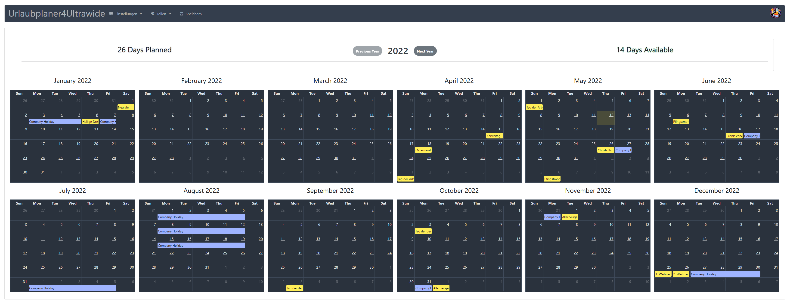
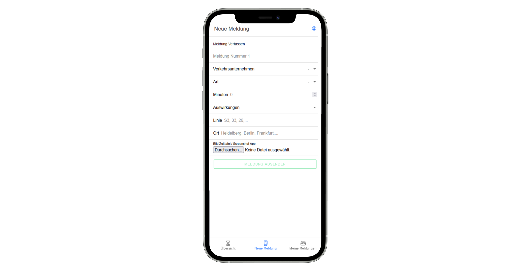
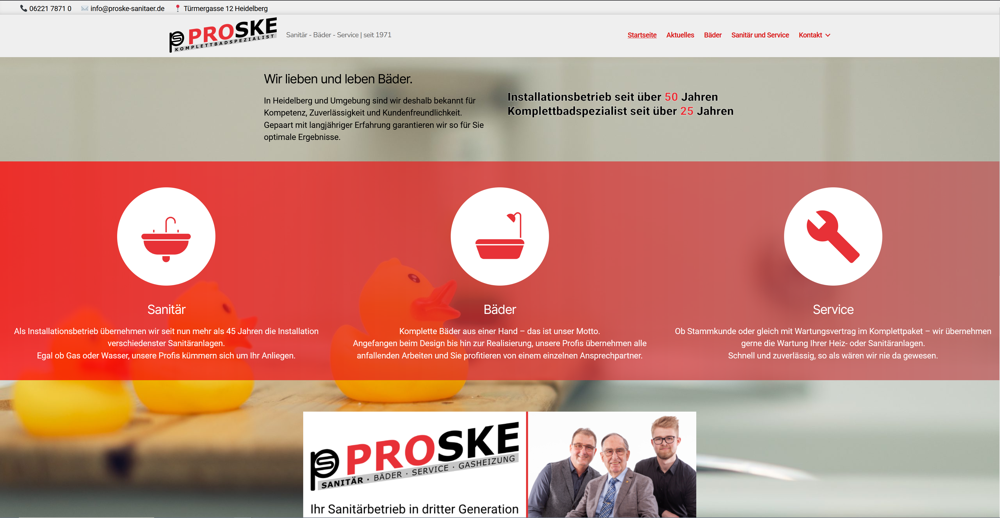
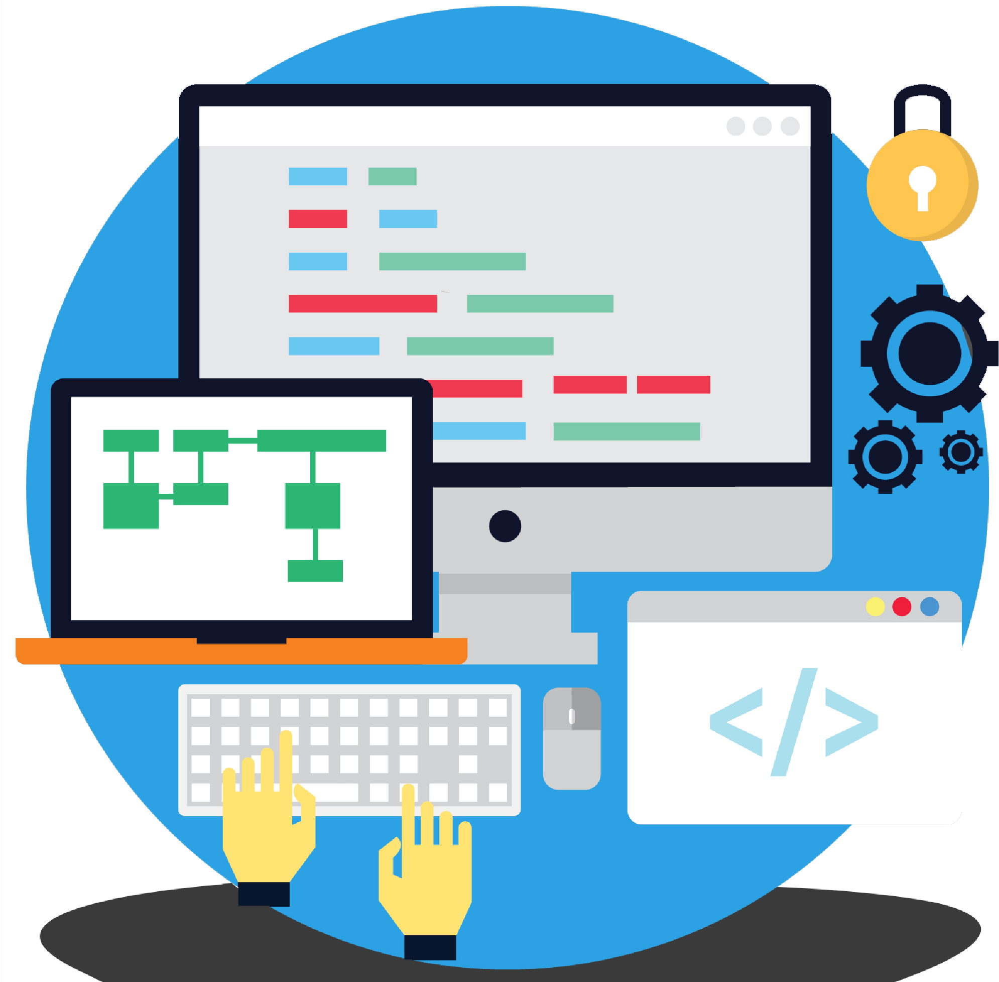
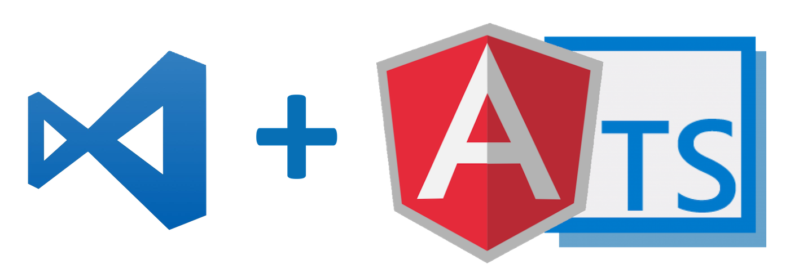
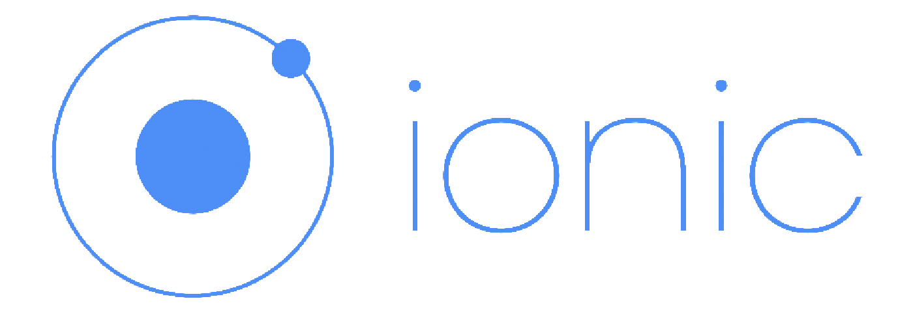
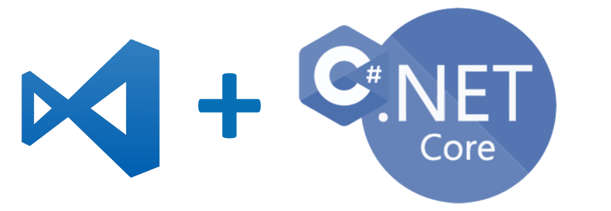
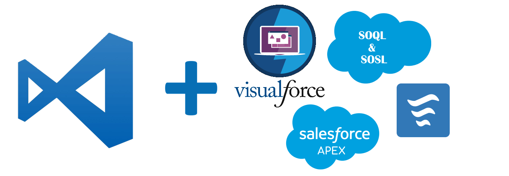
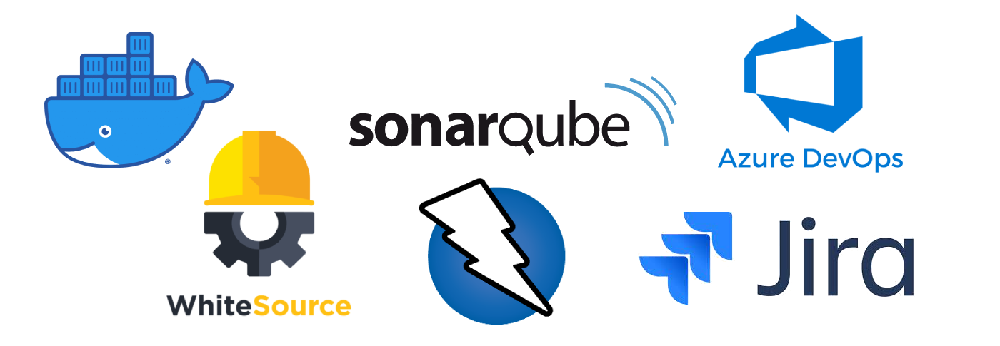

Urlaubplaner4Ultrawide |
Zeitdiebe |
|  |  |
A Vacation Planner for Ultrawide MonitorsPremise:Ultrawide Monitors offer the possibility to have all months of the year in day resolution displayed at once. This is the perfect premise for planning your vacation days. TechstackFrontend:TypeScript, Angular, PrimeNg, FullCallendar Versioning:Public GitHub Repository, still massevly work in progress. Deployment:Free Google Firebase Instance |
A Tracker App for delays and cancellations of Train DeparturesPremise:I travel with DB maybe twice per month. I have never in the past 3 years had a train that was punctual. I want to track how many minutes of my life have been stolen by unpuctual trains. TechstackFrontend:TypeScript, Angular, Ionic Backend:Google Firebase free Instance (+ FireStorage) Versioning:Public GitHub Repository, still massevly work in progress. Not enough documentation to get it running yourself (since you also need a firebase instance) Deployment:Not yet deployed. Will be available via apk. |
Proske Sanitär Website |
Undisclosed Projects |
|  |  |
Website for Proske Sanitär HeidelbergPremise:Their old website was written in pure html and was really getting old. It was also quite hard to find them in Google. I invested a weekend and used Wordpress to build them a Website they could edit themselves while having a good enough base SEO to be found via Search Engines. Techstack:Wordpress Versioning:Private GitHub Repository |
Some Webapps / Mobile ProjectsI worked and work on a few mobile targeted Web-Applications with Angular on Ionic, NestJs/ExpressJs, MongoDB/PostgreSql This is done in my free time, through hackathons on weekends or after work. I also regularly do coding excersises like AdventOfCode to learn new languages, or try out new Tools / Stacks out of personal interest. |
Frontend Web-Development |
Backend Web-Development |
Salesforce B2B Development |
DevSecOps |
|   |  |  |  |
|
Learned through various Projects, both for work and private. |
Learned through various Projects, both for work and private. |
Learned through the migration to Salesforce in the company I work for. |
Learned through various Projects, both for work and private. |
Web-Development |
Decentralized Applications |
Security |
Finance |
|
The Web is the single most democratizing power of our time and it just does not stop being interesting. I visited my first Website at age 6 in 2005 together with my dad, it was eBay and he was buying some car parts. Since then I have been hooked as a consoomer, YouTube, Social Networks, Games - you name it. The Web defined my life. As I grew older, my Interest naturally turned into the desire to program, work in the field. |
As the Internet becomes more and more centralized by big companies such as AWS, Facebook, Google etc. it becomes ever so important that we don't waste the potential. Decentralized has become a huge buzzword, but I am sure that decentralized applications such as p2p messaging, bitcoin, p2p social networks will have a ever growing importance in the coming years. The Internet can be weaponized - but we can also use it to deweaponize essential tools such as speach and ownership. |
Ever since Edward Snowden leaked the inhumane way National Security Agencies all around the world monitor, store and analyze our personal information and data it has become clear that their is no digital privacy. Nevertheless, reading the documents awakened my interest in Cyber Security, Basic Concepts for ones personal life aswell as for work (e.g. Application Security Management). |
As the first generation that will not be able to rely on social security for their pension we must be open for the tools capitalism has to offer. Money has also become one of the biggest weapons of nations, which is why I believe their needs to be an alternative like bitcoin. |